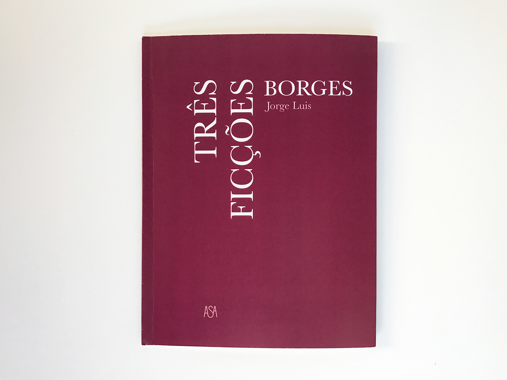
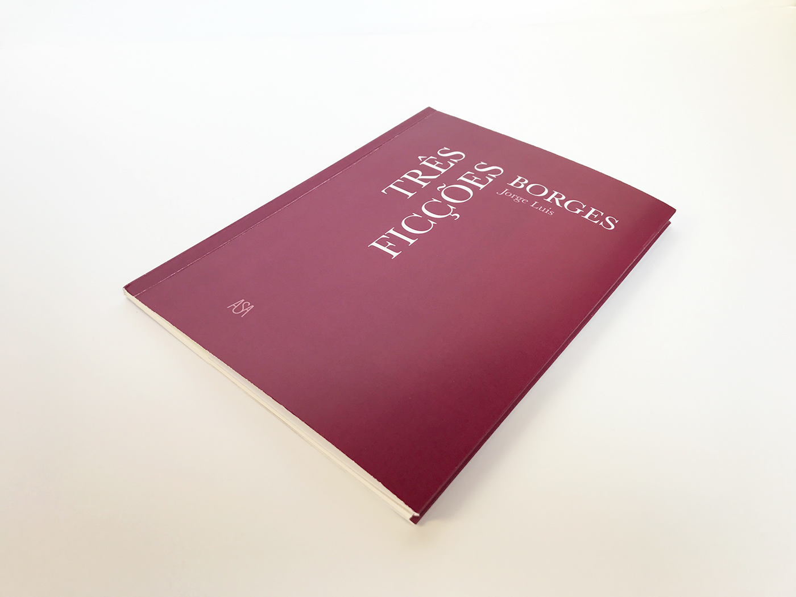
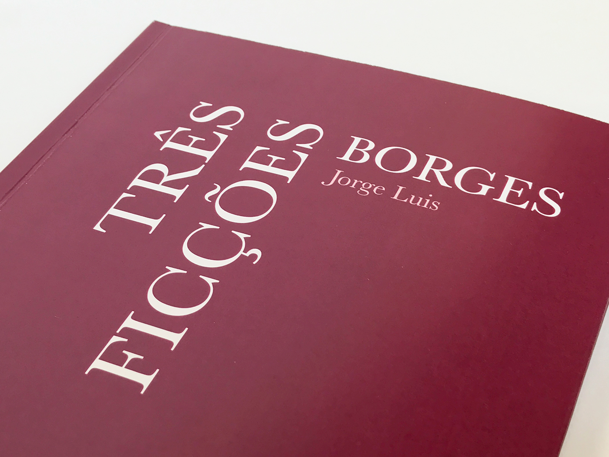
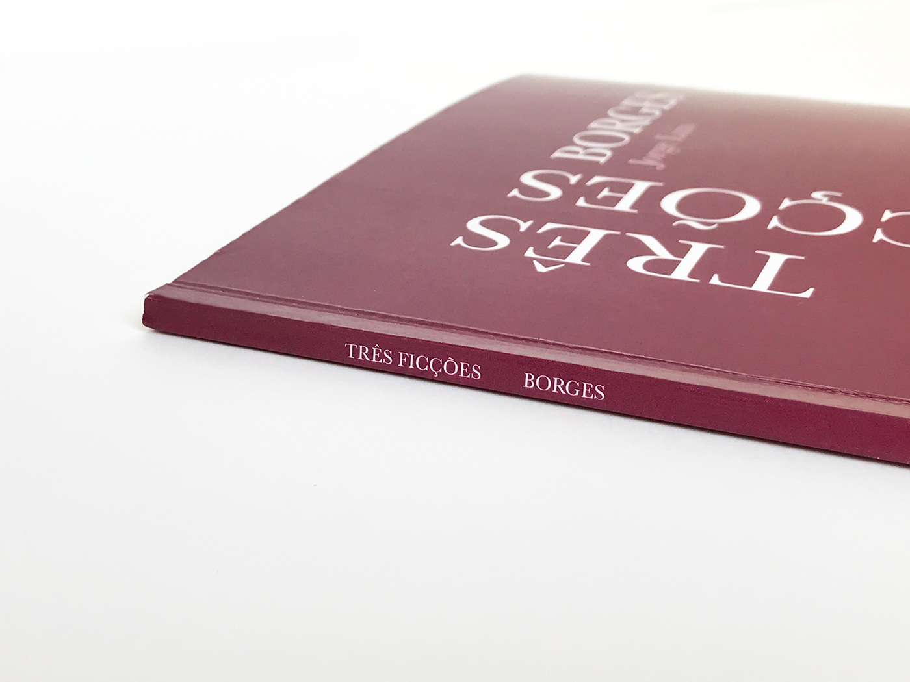
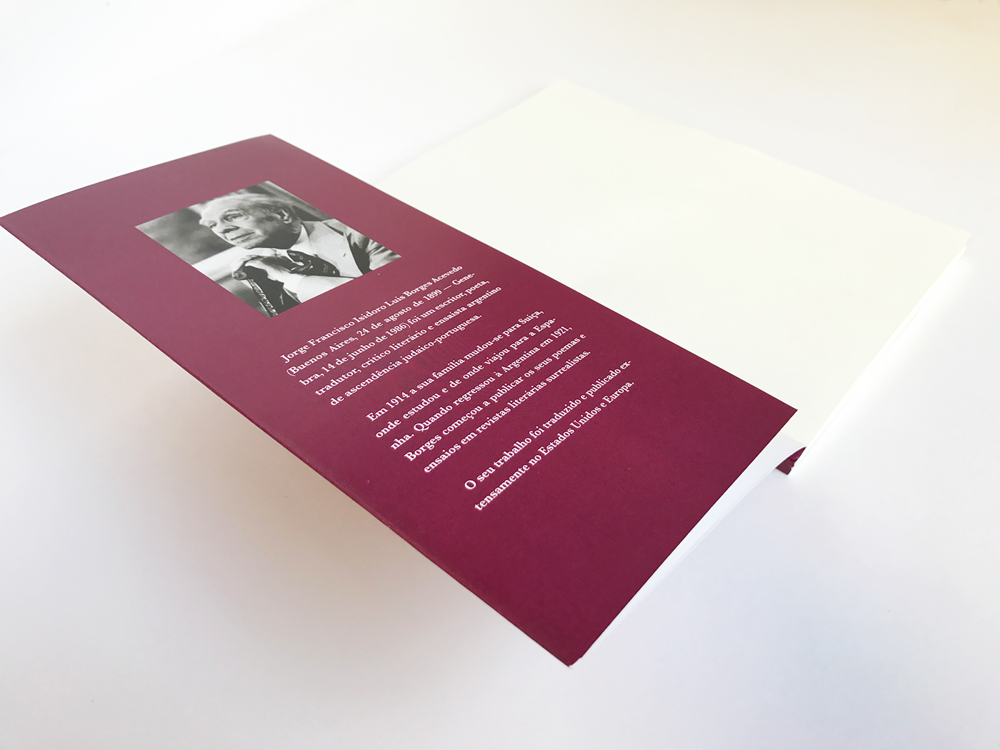
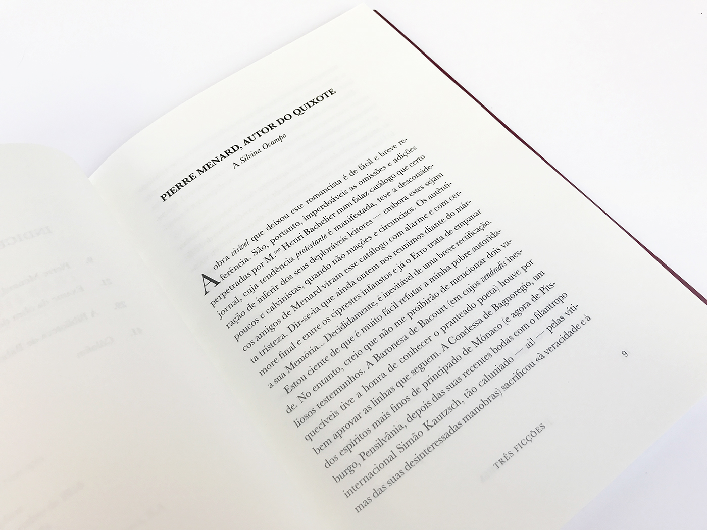
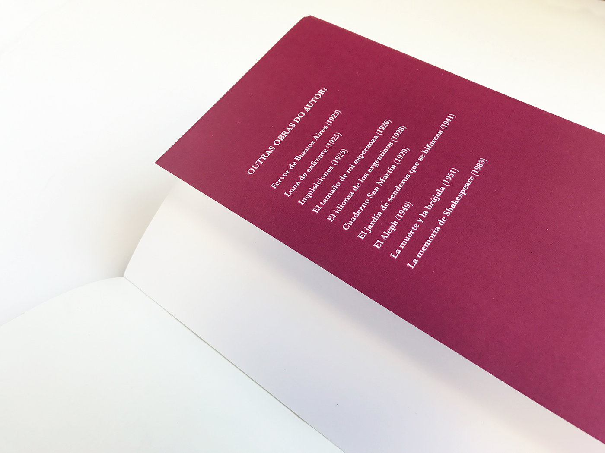
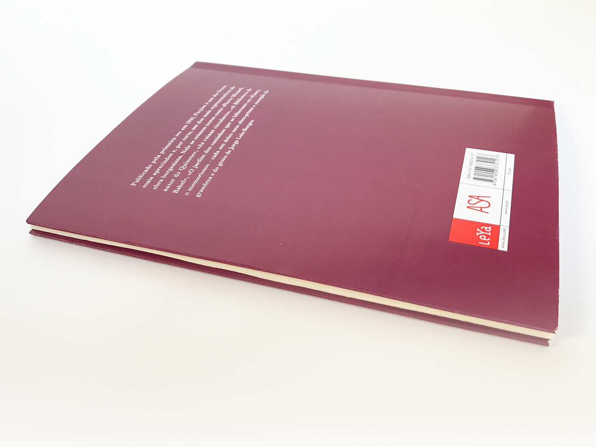
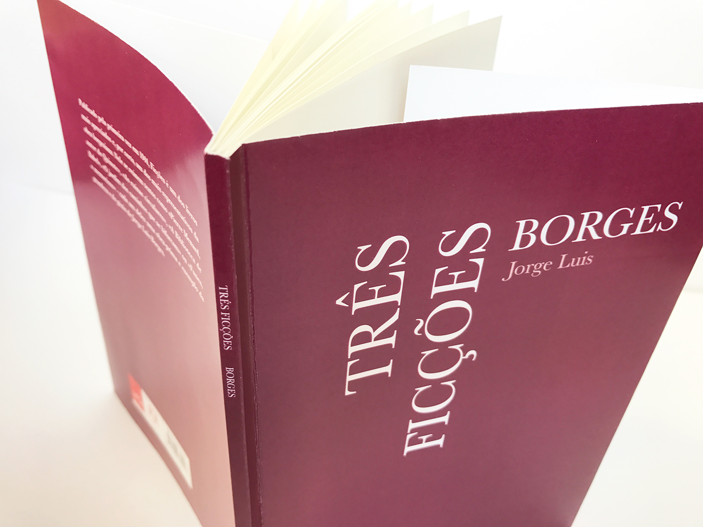
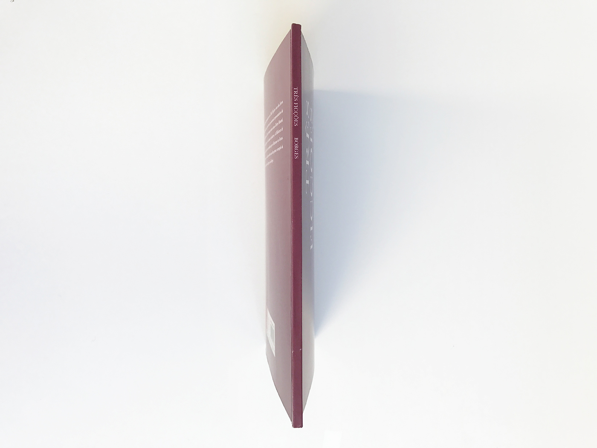

THREE FICTIONS
Fourth Year of University
Cover of the book
Cover of the book
Detail of the cover
Detail of the spine
First "badana"
Interior of the book
Second "badana"
Back cover of the book
Book - Final Result
Detail of the spine
The project is a re-pagination of three short stories from the book "Ficciones" by Jorge Luis Borges. For the inside of the book, I wanted to keep very simple traditional look, with a justified serif font (in this case Baskerville). As for the composition of the text, I opted to use the golden rule, and in order to keep the look of the page balanced I decided to give it a header instead of a fixed footer. For the cover, I chose only a typographic composition, as I wanted it to have a more contemporary look. The color chosen for the background refers to the original work. The format is A5, as it is a more handy and practical format. I opted for a sprung back with two "badanas", to give greater stability, and on the spine I chose to write only the name of the book and author, due to its thin width.

© Faculdade de Belas Artes da Universidade do Porto | 2016 | Portefólio Tânia Ramos